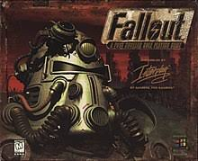

Fallout
o que é esse jogo
Ambientada em uma realidade alternativa em que uma guerra nuclear dizimou a maioria da população, Fallout se passa mais de 200 anos após o conflito, quando alguns de seus sobreviventes desenvolveram comunidades em abrigos subterrâneos, enquanto outros vivem em condições precárias na radiação da superfície.
principais jogos da franqia
Fallout
Fallout foi produzido por Tim Cain, desenvolvido pela Black Isle Studios e publicado pela Interplay em 1997 exclusivamente para PC. O jogo é considerado por alguns como uma continuação não-oficial de Wasteland também um jogo Exclusivo de PC, mas tal título não poderia ser utilizado pois a Electronic Arts possuía os direitos de uso do mesmo; e, exceto por pequenas referências, os jogos ocorrem em universos distintos. Fallout utilizaria o sistema GURPS da Steve Jackson Games, mas o acordo entre as partes não se concretizou devido ao uso excessivo de violência no jogo, forçando a Black Isle a alterar o sistema GURPS para o sistema S.P.E.C.I.A.L., desenvolvido internamente.
Fallout 2
Fallout 2 foi desenvolvido pela Black Isle Studios e publicado pela Interplay em 1998 Exclusivamente para PC. A história do jogo se passa em 2241, 80 anos após os acontecimentos do primeiro episódio da série. O jogo conta a história do descendente do herói original e sua jornada para salvar sua tribo de fome, para isso deve encontrar uma máquina conhecida como a "Garden of Eden Creation Kit" (GECK) que pode transformar ambientes devastados em ambientes férteis.[5] Embora tenha quase um mundo completamente novo, as histórias e aventuras são várias vezes maiores do que seu antecessor, a mecânica de jogo de Fallout permanecem praticamente inalterados, com a maioria das mudanças dedicado à correção de problemas de interface.
Fallout 3
Fallout 3 foi desenvolvido pela Bethesda Softworks e lançado em 28 de Outubro de 2008 para PC, Xbox 360 e PlayStation 3. O jogo passa-se na cidade de Washington D.C. em 2277, 35 anos após o final do segundo Fallout, num mundo pós guerra, totalmente devastado por uma violenta e devastadora guerra nuclear entre os Estados Unidos e a China. Você é um morador do Vault 101 e precisa de encontrar o seu Pai, que saiu de lá sem dar notícias.
Fallout: New Vegas
Fallout: New Vegas foi desenvolvido pela Obsidian Entertainment e lançado em Outubro de 2010. O jogo passa-se na cidade de Las Vegas e no deserto de Mojave no ano de 2281, quatro anos após os acontecimentos de Fallout 3. Apesar de não ser uma sequencia direta e não ter nenhum personagem de Fallout 3 é muito semelhante em sua jogabilidade. Em New Vegas o jogador assume o papel de um mensageiro do pós-apocalíptico deserto de Mojave. Quando o jogo começa, o mensageiro é baleado e deixado para morrer pouco antes de ser encontrado e levado para um médico da cidade vizinha de Goodsprings, marcando assim o início do jogo e saindo a procura do seu assassino. A cidade de New Vegas é uma visão pós-apocalíptica de Las Vegas, com apenas quatro casinos em pé. New Vegas é o primeiro da série Fallout a ter vários finais diferentes com base nas ações do jogador, cada decisão pode mudar drasticamente os acontecimentos da história de Fallout: New Vegas
Fallout 4
Lançado em Novembro de 2015 e desenvolvido pela Bethesda Game Studios, Fallout 4 se passa cerca de 10 anos após os eventos de Fallout 3 nele o jogador assume o papel do "último sobrevivente da vault 111" cujo filho foi sequestrado e seu cônjuje assassinado. É nossa missão encontrar o nosso filho e se vingar. O jogo apresenta um novo sistema de criação e customização de armas e armaduras. O jogo se passa numa versão pós-apocalíptica da cidade de Boston e faz constantes referências á personagens de Fallout 3 incluindo MCready, Elder Squirre Maxson e Dra. Madison Lii que voltam a aparecer numa versão mais adulta.